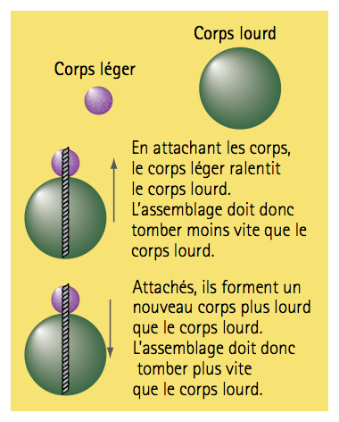
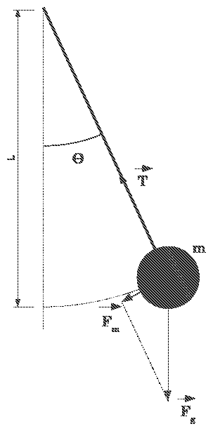

绪论 物理课程基础¶
Fondements de la physique — Introduction
PREMIER COURS · 第一课
阅读说明
每段先列法语原文；其下缩进、带深蓝竖条的小字号段落为中文翻译。加粗为关键词，括号内为中文释义。
本讲是《电路基础》的第一课（4 学时），也是 TD1–TD2 的对应讲义：先讲科学方法与实验方法，再讲测量、量纲与不确定度，最后讨论 AI 时代的学习方法与中法教学理念。原讲义中本身即为中文的幻灯片（1977 年高考题、AI 讨论、中法教育比较等）按原样排印，不再另译。
0.1 Organisation du cours 课程安排¶
6 Enseignants : Laurent Bédat, Pierre Jean Vallobra, Maël Balluet, 任宽芳, 吴楠, 武媚娟.
6 位教师：Laurent Bédat、Pierre Jean Vallobra、Maël Balluet、任宽芳、吴楠、武媚娟。
bilingue français–anglais（法英双语） · trilingues ch/fr/en（中法英三语） · bilingue ch/en（中英双语）
24 h cours magistraux（24 学时课堂讲授，CM）分为三个模块：
Répartition des 24 h de cours magistraux
24 学时课堂讲授的分配
Fondements de la physique 物理课程基础 — 4 h
- Méthode scientifique — 科学方法
- Mesures, dimensions et incertitudes — 测量、量纲与不确定度
- IA et mentalités d'enseignement françaises et chinoises — 人工智能与法中教学理念
Électrostatique — Champs et potentiels 静电学——电场与电势 — 10 h
- Force et champ électrostatiques — 静电力与静电场
- Théorème de Gauss — 高斯定理
- Conducteurs et condensateurs — 导体与电容器
Électrocinétique et circuits électriques 动电学与电路 — 10 h
- Transport de charges — 电荷输运
- Circuits électriques — 电路
- Dissipation d'énergie — 能量耗散
- Structure des circuits électriques — 电路结构
24 h TD : 12 séances de 2 h 16 h TP : 4 séances de 4 h (2 enseignants/séance)
24 学时 TD（辅导课）：12 次，每次 2 小时 16 学时 TP（实验课）：4 次，每次 4 小时（每场 2 名教师）
-
TP1 — Mesure et incertitude（测量与不确定度） TP2 — Résistance（电阻）
-
TP3 — Ondoscope / Oscilloscope（示波器） TP4 — Capaciteurs（电容器）
Lexique 词汇
HC = h : heure de cours（课时）；CM : cours magistral（课堂讲授）； TD : travaux dirigés（辅导课）；TP : travaux pratiques（实验课）。
本讲属于 Partie 1 — Fondements de la physique（第一部分——物理基础），该部分包含三节：
本讲属于第一部分——物理基础，该部分包含三节：
- Méthode scientifique — 科学方法
- Mesures, dimensions et incertitudes — 测量、量纲与不确定度
- IA et mentalités d'enseignement françaises et chinoises — 人工智能与法中教学理念
0.2 Méthode scientifique 科学方法¶
0.2.1 De l'enseignement secondaire au supérieur 从中学到大学¶
Du primaire et au secondaire（初等和中等教育）：
初等和中等教育：
-
Découvrir les phénomènes physiques ;
发现物理现象；
-
Acquérir des notions et des lois fondamentales ;
掌握基本概念与基本定律；
-
Résoudre des problèmes simples et guidés.
解决简单且有引导的问题。
Observer（观察）→ découvrir（发现）→ apprendre（学习）→ appliquer（应用）
Dans l'enseignement supérieur（高等教育）：
高等教育：
-
Comprendre pourquoi et connaître les conditions de validité ;
理解“为什么”，并知道适用条件；
-
Construire des modèles et les confronter à l'expérience ;
建立模型，并用实验加以检验；
-
Maîtriser les technologies avancées et innover.
掌握先进技术并创新。
Observer（观察）→ comprendre（理解）→ expérimenter（验证）→ créer, innover（创新）
Objectif 目标
L'objectif n'est plus de savoir « quelle formule utiliser ? », mais de comprendre pourquoi, de construire des modèles et de les valider.
高等教育的目的不再是“用哪个公式”，而是理解为什么、建立模型并验证，最终能够创新。
Formation de l'ingénieur demande（工程师教育的要求）：
工程师教育的要求：
-
comprendre les concepts fondamentaux ;
清楚理解基本概念；
-
identifier les hypothèses d'un modèle ;
明确分辨模型假设；
-
utiliser les mathématiques pour décrire les phénomènes ;
能用数学模型进行描述；
-
valider les modèles par les expériences ;
能用实验进行验证；
-
évaluer la cohérence, les incertitudes et les limites.
评价结果的一致性、误差及使用条件。
Objectif de la première année
第一学年培养目标
Passer de « savoir appliquer » à « comprendre et raisonner comme un scientifique et un futur ingénieur ».
从“学会应用／做题”到“具备科学家与未来工程师的理解力与推理能力”。
0.2.2 Observer, hypothèse, expérimentation 观察、假设与实验¶
But de la physique 物理学的目标
La physique vise à établir les lois de la nature à partir d'observations intentionnelles et quantitatives.
物理学旨在通过有目的、定量的观察建立自然规律。
Différence entre voir et observer scientifiquement. Ex. Pomme de Newton ou pendule simple...
看与科学观察之间的区别。例：牛顿的苹果或单摆……
-
La physique n'est pas une collection de formules mais une démarche de questionnement et de raisonnement ;
物理学不是公式的集合，而是质疑与推理的思维方法；
-
En France, l'enseignement privilégie la réflexion logique et l'esprit critique. Les prépas insistent quant à elles sur la rigueur mathématique. En Chine, on met l'accent sur la mémorisation des formules et stratégies d'examen. Pourtant, l'essentiel reste la compréhension physique profonde.
在法国，教学重视逻辑思维与批判精神，预科班尤其强调数学严谨性；在中国，教学侧重公式记忆与应试策略。然而，核心仍是对物理的深刻理解。
-
Objectif BIFAST : former des ingénieurs créatifs et novateurs capables de concevoir leurs propres protocoles, au-delà de la simple maîtrise de techniques avancées.
BIFAST 目标：培养有创造力与创新精神的工程师，能够设计自己的实验方案，而不仅是掌握先进技术。
Définition 定义
Observer est distinct de regarder ou de voir. L'observation scientifique est intentionnelle et structurée.
观察不同于看或看见。科学观察是有目的、有结构的。
Caractéristiques d'une bonne observation（良好观察的特征）：
良好观察的特征：
-
Systématique 系统的：on observe avec un protocole ;
按照实验方案进行观察；
-
Mesurable 可量化的：on quantifie (ou du moins on qualifie avec rigueur) ;
进行定量（至少严格定性）描述；
-
Reproductible 可复现的：une observation isolée n'est pas scientifique.
孤立的观察不具科学性。
Exemple（示例）：
示例：
-
On regarde un parachutiste qui chute, on voit la pluie tomber...
我们看到跳伞者下落，看到雨滴落下……
-
On observe la chute d'une pomme, d'une pierre ou d'une plume et on mesure le temps de chute.
我们观察苹果、石头或羽毛的下落，并测量下落时间。
-
On cherche à établir une relation entre le temps de chute et certaines propriétés de l'objet.
我们试图建立下落时间与物体某些性质之间的关系。
Pour cela, il est nécessaire de formuler des hypothèses et de tester expérimentalement.
为此，需要提出假设并进行实验检验。
Définition 定义
Une hypothèse est une réponse anticipée et provisoire à une question issue de l'observation. Elle doit être testable.
假设是对观察所提出的问题作出的预先的、临时性的回答。它必须可验证。
Les deux types d'hypothèses（两类假设）：
两类假设：
-
Hypothèse de protocole 方案假设：comment concevoir l'expérience pour tester la question ?
如何设计实验来检验该问题？
-
Hypothèse causale 因果关系假设：quelle relation entre les variables ?
各变量之间存在什么关系？
L'importance de l'échec : une hypothèse invalidée est au moins aussi importante qu'une hypothèse validée. Elle enseigne sur les causes de l'échec et oriente la prochaine expérience.
失败的重要性：被否定的假设至少与被证实的假设同等重要。它揭示了失败的原因，并指引下一次实验。
Exemple — loi d'un objet en chute libre
例：自由落体定律
-
Hypothèse de protocole : champ gravitationnel et frottements négligeables（重力场和摩擦均可忽略）
方案假设：重力场和摩擦均可忽略；
-
Hypothèse causale : \(t = f(h,m,g)\) \(\;\Rightarrow\;\) par analyse dimensionnelle \(t = f(h,g)\) \(\;\Rightarrow\;\) par expérience : \(t = \sqrt{2h/g}\).
因果关系假设：\(t = f(h,m,g)\) \(\;\Rightarrow\;\) 由量纲分析得 \(t = f(h,g)\) \(\;\Rightarrow\;\) 由实验得 \(t = \sqrt{2h/g}\)。
Principe fondamental : la méthode expérimentale consiste à modifier un seul facteur à la fois pour mesurer son effet sur le phénomène étudié.
基本原则：实验方法要求每次只改变一个因素，以测量它对待研究现象的影响。
Schéma OHERIC（présentation simplifiée）: Observation, Hypothèse, Expérience, Résultat, Interprétation, Conclusion.
OHERIC 模式（简化表述）：观察（Observation）、假设（Hypothèse）、实验（Expérience）、结果（Résultat）、解释（Interprétation）、结论（Conclusion）。
Le protocole expérimental（实验方案）：
实验方案：
-
Objectif : que cherche-t-on à caractériser ?
目标：要表征什么？
-
Principe de mesure : quelle méthode utilise-t-on ?
测量原理：采用什么方法？
-
Montage : schéma clair et annoté ;
装置：清晰并标注的示意图；
-
Étapes : séquence d'actions ;
步骤：操作的先后顺序；
-
Analyse : traitement des données ;
分析：数据处理；
-
Conclusion : validation ou invalidation de l'hypothèse.
结论：假设被证实还是被否定。
0.2.3 Les trois types d'expérimentation 三类实验方法¶
L'expérimentation ne se réduit pas à la manipulation matérielle. On en distingue aujourd'hui trois types, chacun ayant ses spécificités, ses avantages et ses inconvénients.
实验并不局限于对实物进行操作。如今区分出三类实验，各具特点、优势与局限。
1. Expérimentation physique (matérielle) 物理实验（实物操作）¶
« Le réel résiste ». C'est la forme la plus classique, celle que les étudiants connaissent des TP.
“现实会抵抗”。这是最经典的形式，也是学生在实验课上熟悉的形式。
Définition 定义
Manipulation d'objets matériels (bancs optiques, circuits, pendules, éolienne miniature) avec des instruments de mesure réels.
使用真实测量仪器操作实物（光学平台、电路、单摆、微型风力发电机）。
Spécificité（特点）：
特点：
-
Elle confronte la théorie aux incertitudes de mesure, aux défauts de fabrication... donc un « test de vérité ».
它把理论置于测量不确定度与制造缺陷的检验之下……因此是一场“真理测试”。
-
Elle est souvent coûteuse, longue à mettre en place et parfois impossible (ex. : étudier l'intérieur d'une étoile).
它往往昂贵、搭建耗时，有时甚至不可能实现（例如研究恒星内部）。
-
Elle peut aussi être simple et peu coûteuse, réalisable chez soi, et très utile pour comprendre la physique, au point de valoir parfois plus qu'un dispositif sophistiqué.
它也可以简单而廉价，在家即可完成，对理解物理非常有用，有时甚至胜过复杂精密的装置。
2. L'expérimentation de pensée 思想实验¶
Initiée par Galilée, popularisée par Einstein. C'est l'outil du théoricien.
由伽利略开创、爱因斯坦普及，是理论工作者的工具。
Définition 定义
Une expérience réalisée mentalement, en poussant un raisonnement logique jusqu'à ses extrêmes. Elle repose sur des « idéalisations ».
在头脑中进行的实验，把逻辑推理推向极致。它建立在“理想化”之上。
Force : l'expérience de pensée ne prouve pas que le réel fonctionne d'une certaine façon — seul le terrain peut le dire. En revanche, elle prouve, par la seule force de la logique, ce qui est impossible, contradictoire ou nécessaire dans un cadre donné. C'est un outil de réfutation et de clarification conceptuelle d'une puissance redoutable.
力量：思想实验不能证明现实如何运作——只有实际检验才能回答。但它仅凭逻辑的力量就能证明：在给定框架内什么是不能的、矛盾的或必然的。它是极具威力的反驳与概念澄清工具。
Exemples（示例）：
示例：
-
Expérience de pensée de Galilée (le temps de chute d'un objet ; voir figure) ;
伽利略的思想实验（物体下落时间；见图）；
-
Expérience de pensée d'Einstein (la poursuite du rayon lumineux, le paradoxe EPR...) ;
爱因斯坦的思想实验（追赶光线、EPR 佯谬……）；
-
On peut élargir et appliquer cette méthode à des questions simples : la surface d'eau sur la Terre ne peut pas être plane si la Terre a une taille finie. À vous de donner d'autres exemples...
还可以把这种方法推广到简单问题上：如果地球尺寸有限，地球上的水面不可能是平的。请你们再举一些例子……

Figure 1 — Expérience de pensée de Galilée sur la chute des corps : le corps léger ralentit le corps lourd, mais l'ensemble est plus lourd que le corps lourd — deux conclusions contradictoires.
图 1：伽利略关于物体下落的思想实验——轻物会拖慢重物，但绑在一起又比重物更重，两种结论互相矛盾。
3. L'expérimentation numérique (simulation) 数值实验（数值模拟）¶
C'est « le 3e pilier de la science », essentiel pour le BIFAST (modélisation).
它是“科学的第三支柱”，对 BIFAST（建模）至关重要。
Définition 定义
On ne manipule pas la matière, mais un modèle mathématique du réel codé dans un ordinateur (ex. : simulation par éléments finis, dynamique des fluides).
不操作实物，而是操作在计算机中编码的现实数学模型（例如有限元模拟、流体力学）。
Spécificité : elle permet de faire varier des paramètres que la réalité interdit (ex. : annuler la gravité, simuler des températures extrêmes) et de visualiser des grandeurs invisibles (champs de pression, lignes de courant).
特点：它可以改变现实所禁止的参数（例如消除重力、模拟极端温度），并把不可见的量（压力场、流线）可视化。
Le grand piège 最大的陷阱
« Garbage in, garbage out » 垃圾进，垃圾出。
Une simulation numérique est aussi bonne que le modèle et les paramètres qu'on lui donne. Elle ne crée pas de vérité, elle explore des scénarios.
“垃圾进，垃圾出”。数值模拟的好坏取决于所给的模型与参数。它不创造真理，只探索情景。
D'un usage simple quotidien au plus sophistiqué et complet.
从日常的简单使用到最复杂、最完备的应用。
0.2.4 Comparaison et résumé 比较与小结¶
Tableau 1 — Comparaison des trois types d'expérimentation
表 1：三类实验方法的比较
| Type d'expérience | Question principale | Ce qu'elle prouve | Limite |
|---|---|---|---|
| Expérience de pensée（思想实验） | Est-ce logiquement cohérent ?（逻辑上是否自洽？） | La cohérence logique ou l'impossibilité logique d'une hypothèse dans un cadre donné.（在给定框架内假设的逻辑自洽性或逻辑不可能性。） | Ne vérifie pas directement la réalité.（不直接检验现实。） |
| Expérience physique（物理实验） | Est-ce conforme aux observations ?（是否符合观察？） | La conformité au réel dans les conditions testées.（在所检验条件下的现实符合性。） | Valide seulement dans les conditions testées.（仅在所检验条件下成立。） |
| Expérience numérique（数值实验） | Que prédit le modèle ?（模型预言什么？） | La stabilité et les conséquences d'un modèle mathématique.（数学模型的稳定性与推论。） | Ne vérifie pas à elle seule que le modèle est juste.（仅凭它不能验证模型正确。） |
La boucle : 3 types d'expérimentation pour confirmer ou infirmer l'hypothèse.
闭环：用三类实验证实或否定假设。
Le cycle complet : Observation → Question → Hypothèse → Expérience → Résultat → Interprétation → Nouvelle question.
完整循环：观察 → 问题 → 假设 → 实验 → 结果 → 解释 → 新问题。
Ce qui est important pour les étudiants BIFAST（对 BIFAST 学生而言重要的是）：
对 BIFAST 学生而言重要的是：
-
La démarche n'est pas séquentielle 顺序的 : elle est dynamique, on revient en arrière si nécessaire ;
过程并非顺序的：它是动态的，必要时可回到前一步；
-
L'anticipation est clé 预判是关键 : on analyse le problème et prévoit les résultats possibles avant l'expérience ;
预判是关键：实验前分析问题并预想可能的结果；
-
Le protocole 方案 est un élément pivot : mémoire de la manipulation, outil de contrôle.
实验方案是枢纽：它是操作的记录，也是控制的工具。
Conclusion et perspectives（总结与展望）：
总结与展望：
-
La méthode scientifique n'est pas une recette mais une posture intellectuelle 思想姿态 ;
科学方法不是配方，而是一种思想姿态；
-
L'ingénieur est celui qui sait concevoir, critiquer et adapter une démarche expérimentale ;
工程师应当能够设计、批判并调整实验过程；
-
Les « échecs » expérimentaux sont des ressources d'apprentissage 学习资源.
实验中的“失败”是学习资源。
Vocabulaire clé 重点词汇
科学方法核心术语
- observation intentionnelle：有目的的观察
- hypothèse testable：可检验的假设
- protocole expérimental：实验方案
- systématique / mesurable / reproductible：系统的／可量化的／可复现的
- démarche de questionnement：质疑与推理的过程
- expérimentation matérielle：实物实验
- expérimentation de pensée：思想实验
- expérimentation numérique：数值实验
- idéalisation：理想化
- réfutation：反驳
- anticiper：预判
- posture intellectuelle：思想姿态
0.3 Mesures, dimensions et incertitudes 测量、量纲与不确定度¶
Les propriétés physiques sont quantifiées avec des grandeurs physiques.
物理性质要通过物理量加以量化。
-
Une grandeur physique n'a de sens que si elle est mesurée et accompagnée d'une unité ;
物理量只有在被测量并带有单位时才有意义；
-
Elle doit être compatible dimensionnellement avec les lois physiques.
它必须在量纲上与物理定律相容。
Objectifs（本节教学目的）：
本节教学目的：
- Distinguer 分清楚 grandeur, dimension et unité ;
- Utiliser les équations aux dimensions 量纲方程 ;
- Vérifier l'homogénéité 量纲一致性 d'une équation physique ;
- Identifier les principales sources d'erreurs expérimentales ;
- Calculer une moyenne 平均值 et une incertitude 不确定度 simple ;
- Présenter correctement un résultat expérimental.
0.3.1 Grandeurs, dimensions et unités 物理量、量纲与单位¶
- Grandeur physique（物理量）：une propriété mesurable = valeur numérique avec unité（可测量的性质＝数值＋单位）；
- Unité（单位）：quantification d'une grandeur（对物理量的量化）；
- Dimension（量纲）：nature physique d'une grandeur（物理量的物理本质）。
Exemple 例
Une personne de 60 kg pèse 588,6 N. Son énergie cinétique est de 1387,2 J lorsqu'il court à 6,8 m/s.
一个 60 kg 的人重 588,6 N；当他以 6,8 m/s 奔跑时，动能为 1387,2 J。
Tableau 2 — Valeur, unité et dimension de quatre grandeurs physiques
表 2：四个物理量的数值、单位与量纲
| Grandeur physique 物理量 |
masse 质量 |
poids 重力 |
vitesse 速度 |
énergie cinétique 动能 |
|---|---|---|---|---|
| Valeur 数值 | 60 | 588,6 | 6,8 | 1387,2 |
| Unité 单位 | kg | N (Newton) | m/s | J (Joule) |
| Dimension 量纲 | M | MLT\(^{-2}\) | LT\(^{-1}\) | ML\(^{2}\)T\(^{-2}\) |
-
Seules 3 dimensions de base interviennent pour les 4 grandeurs : Masse M, Longueur L, Temps T ;
这 4 个物理量只涉及 3 个基本量纲：质量 M、长度 L、时间 T；
-
Selon le document 2019 du Bureau International des poids et mesures sur le Système International.
依据国际计量局 2019 年关于国际单位制的文件。
0.3.2 Dimensions de base 基本量纲¶
- Chaque grandeur physique a son unité. Combien de dimensions sont nécessaires afin de décrire la totalité des quantités physiques ?
-
La réponse est 7, dont 4 seulement en mécanique et électricité.
每个物理量都有自己的单位。要描述全部物理量，需要多少个量纲？答案是 7 个，其中力学与电学只用到 4 个。
La Longueur, le Temps, la Masse, la température \(\Theta\), l'Intensité du courant
长度、时间、质量、温度 \(\Theta\)、电流强度。
读者注
原文此处称“力学与电学只用到 4 个”，但紧接着列出的基本量为长度、时间、质量、温度与电流强度共 5 个。按国际单位制，力学用到 L、T、M 三个，电学再加电流强度 I，共 4 个；温度 \(\Theta\) 属于热学。
- À partir des dimensions de base on peut en créer de nouvelles ;
-
Exemples（示例）：
由基本量纲可以导出新的量纲。例如：速度、能量（功）、功率、电阻、电压的量纲如下。
Démonstration 证明
由速度＝距离／时间、\(E=\frac12 mv^2\) 或 \(W=Fd\)、\(P=W/t\)，可直接导出上述量纲。
0.3.3 Homogénéité et analyse dimensionnelle 量纲一致性与量纲分析¶
Toute loi physique doit s'écrire de manière homogène — 一切物理定律都必须满足量纲一致性：tous les termes doivent avoir la même dimension.
任何物理定律都必须写成量纲一致的形式：所有项必须具有相同的量纲。
-
Certaines grandeurs physiques sont sans dimension（某些物理量无量纲）：
-
Le rapport des grandeurs de la même unité. Ex. diamètre et hauteur d'un cylindre ; \([d/h]=\varnothing\).
同一单位的量之比。例：圆柱的直径与高度；\([d/h]=\varnothing\)。
-
L'angle n'a pas de dimension.
角度没有量纲。
-
Du point de vue des dimensions, une dérivée est une division. Ex. : \([a]=[dv/dt]=\mathrm{L}\cdot\mathrm{T}^{-2}\).
从量纲角度看，求导相当于除法。例：\([a]=[dv/dt]=\mathrm{L}\cdot\mathrm{T}^{-2}\)。
-
Une intégration correspond à l'inverse d'une dérivation. Ex. : \([v]=[\int a\,dt]=\mathrm{L}\cdot\mathrm{T}^{-1}\).
积分相当于求导的逆运算。例：\([v]=[\int a\,dt]=\mathrm{L}\cdot\mathrm{T}^{-1}\)。
-
Les arguments des fonctions mathématiques usuelles sont forcément sans dimension.
常用数学函数的自变量必须无量纲。
-
Principe d'homogénéité 量纲一致性原理
On ne peut additionner, soustraire ou comparer que des grandeurs ayant la même dimension.
只能对具有相同量纲的量进行相加、相减或比较。
L'analyse dimensionnelle est un excellent outil de vérification utilisé quotidiennement en physique.
量纲分析是一种极佳的验证工具，物理学中每天都会用到。
- Principe fondamental : une équation physique doit être homogène ;
- Pratique : tous les membres doivent avoir la même dimension ;
-
Exemples :
-
5 kg plus 8 m n'a pas de sens.
5 kg 加 8 m 没有意义。
-
L'équation \(x=v+t\) est certainement fausse (\(x\) — distance, \(v\) — vitesse, \(t\) — temps).
方程 \(x=v+t\) 必定错误（\(x\) 为距离，\(v\) 为速度，\(t\) 为时间）。
-
La période d'un pendule simple est indépendante de la masse. On peut déduire \(T \propto \sqrt{l/g}\).
单摆周期与质量无关，可由此推出 \(T \propto \sqrt{l/g}\)。
-
-
Applications（应用）：vérifier une formule（检验公式）; retrouver une unité（还原单位）; détecter une erreur de calcul（发现计算错误）; construire une loi physique approchée（建立近似物理定律）。
0.3.4 Unités et Système international 单位与国际单位制¶
-
Les grandeurs physiques de même dimension peuvent avoir des unités différentes :
-
Longueur : mètre, km ; pouce, mile...
同一量纲的物理量可以有不同的单位。长度：米、千米；英寸、英里……
-
Volume : litre, m\(^{3}\) ; once liquide, gallon...
体积：升、立方米；液量盎司、加仑……
-
-
Il existe deux grandes familles de systèmes d'unités（单位制分为两大类）：
- la famille métrique SI avec variantes CGS et MKS — système moderne, universel et cohérent（国际公制 SI，含 CGS、MKS 变体——现代、通用且一致的单位制）；
- la famille anglo-saxonne — système ancien, hérité d'usages historiques, et moins cohérent（英美制——历史沿袭的旧制，一致性较差）。
-
Les grandeurs doivent être exprimées dans un système d'unités commun pour（物理量必须用共同的单位制来表示，以便）：
- comparer des mesures réalisées dans différents laboratoires（比较不同实验室的测量结果）；
- garantir la cohérence des calculs（保证计算的一致性）；
- éviter les erreurs de conversion（un problème très courant : confusion entre degré et radian）（避免换算错误，很常见的问题：混淆度与弧度）；
- communiquer les résultats de manière universelle（以通用的方式交流结果）。
Pour effectuer les mesures, il faut disposer d'une référence appelée unité à comparer.
要进行测量，就需要一个参照标准，称为用以比较的单位。
-
La Chine est l'un des premiers États à avoir cherché une unification des mesures.
- Qin Shi Huang impose des étalons communs dans tout l'empire : longueur, le chi 尺 ; masse, le jin 斤 ; volume, le dou 斗.
- Les valeurs exactes du chi ou du jin changent légèrement selon les dynasties, mais le principe d'un étalon contrôlé par l'État reste une constante pendant plus de deux mille ans.
中国是最早寻求统一度量衡的国家之一。秦始皇在全国推行统一的基准：长度用尺，质量用斤，体积用斗。尺、斤的确切数值随朝代略有变化，但由国家控制基准这一原则延续了两千多年。
-
La France possède des centaines d'unités différentes jusqu'au XVIIIe siècle.
- La même unité peut avoir une valeur différente selon les villes.
- En 1791, le mètre est défini, début du SI — Système International.
- Bureau International des Poids et Mesures 国际计量局 — son abréviation officielle reste BIPM, en français.
- Le SI est entièrement dématérialisé dans sa définition depuis 2019 : on n'a plus besoin d'étalons 标准具 matériels pour définir les unités.
法国直到 18 世纪仍有数百种不同的单位。同一单位在不同城市可能有不同数值。1791 年，米被定义，国际单位制 SI 由此开端。国际计量局的官方英文缩写至今仍沿用其法语缩写 BIPM。自 2019 年起，SI 的定义已完全非实物化：不再需要实物基准来定义单位。
-
SI : système de référence en recherche scientifique, industrie et ingénierie ;
-
Sept unités de base : chacune étant associée à une grandeur fondamentale et à une dimension fondamentale.
SI 是科学研究、工业与工程领域的参考单位制；七个基本单位分别对应一个基本量和一个基本量纲。
Tableau 3 — Les sept unités de base du SI（Cf. « Le Système international d'unités », 9e éd., tab. 2 et 3）
表 3：SI 的七个基本单位（参见《国际单位制》第 9 版表 2 与表 3）
| Grandeur de base 基本量 |
Dimension 量纲 |
Symbole 符号 |
Unité de base 基本单位 |
Symbole 符号 |
|---|---|---|---|---|
| temps 时间 | T | \(t\) | seconde 秒 | s |
| longueur 长度 | L | \(l,x,r\) | mètre 米 | m |
| masse 质量 | M | \(m\) | kilogramme 千克 | kg |
| courant électrique 电流 | I | \(I,i\) | ampère 安培 | A |
| température thermodynamique 热力学温度 | \(\Theta\) | \(T\) | kelvin 开尔文 | K |
| quantité de matière 物质的量 | N | \(n\) | mole 摩尔 | mol |
| intensité lumineuse 发光强度 | J | \(I_v\) | candela 坎德拉 | cd |
- Lettres droites（正体）：量纲符号与单位符号；
- Lettres penchées（斜体）：物理量符号。
Les sept constantes définissant le SI et les sept unités qu'elles définissent :
定义 SI 的七个常数及它们所定义的七个单位：
Tableau 4 — Les sept constantes définissant le SI（Cf. tab. 1, 9e éd.）
表 4：定义 SI 的七个常数（参见第 9 版表 1）
| Symbole 符号 |
Constante 常数 |
Valeur numérique 数值 |
Unité 单位 |
|---|---|---|---|
| \(\Delta\nu_{\mathrm{Cs}}\) | fréquence de la transition hyperfine du césium 铯原子超精细跃迁频率 | \(9\,192\,631\,770\) | \(\mathrm{Hz}\) |
| \(c\) | vitesse de la lumière dans le vide 真空光速 | \(299\,792\,458\) | \(\mathrm{m\,s^{-1}}\) |
| \(h\) | constante de Planck 普朗克常数 | \(6{,}626\,070\,15\times10^{-34}\) | \(\mathrm{J\,s}\) |
| \(e\) | charge élémentaire 元电荷 | \(1{,}602\,176\,634\times10^{-19}\) | \(\mathrm{C}\) |
| \(k\) | constante de Boltzmann 玻尔兹曼常数 | \(1{,}380\,649\times10^{-23}\) | \(\mathrm{J\,K^{-1}}\) |
| \(N_A\) | constante d'Avogadro 阿伏伽德罗常数 | \(6{,}022\,140\,76\times10^{23}\) | \(\mathrm{mol^{-1}}\) |
| \(K_{\mathrm{cd}}\) | efficacité lumineuse 光视效能 | \(683\) | \(\mathrm{lm\,W^{-1}}\) |
Valeurs fixées par définition 由定义固定
Les valeurs numériques des sept constantes de base du SI sont fixées par définition ; elles ne sont plus déterminées par la mesure.
SI 七个基本常数的数值由定义固定，不再通过测量确定。
0.3.5 Incertitudes de mesure 测量的不确定度¶
Même si une équation est homogène 量纲一致的, les mesures restent imparfaites.
即使方程量纲一致，测量仍然是不完美的。
-
Une mesure sans incertitude n'a pas de signification physique :
- En physique, il n'existe pas de mesure parfaitement certaine ;
- L'incertitude quantifie la confiance que l'on peut accorder à une mesure ;
- Un résultat expérimental s'exprime toujours sous la forme : valeur ± incertitude.
没有不确定度的测量没有物理意义：在物理学中，不存在完全确定的测量；不确定度量化了对一次测量可以给予的信任程度；实验结果总是写成：数值 ± 不确定度。
Exemple : mesurer l'épaisseur d'une télécommande avec différents instruments（示例：用不同仪器测量遥控器的厚度）：
示例：用不同仪器测量遥控器的厚度：
- Règle graduée : 17 mm (incertitude \(\sim\) 1 mm) — 刻度尺：17 mm（不确定度约 1 mm）
- Pied à coulisse 游标卡尺 : 17,2 mm (incertitude \(\sim\) 0,1 mm)
- Micromètre 千分尺，螺旋测微器 : 17,24 mm (incertitude \(\sim\) 0,01 mm)
L'instrument le plus précis réduit l'incertitude, mais ne l'élimine jamais.
最精密的仪器能降低不确定度，却永远无法消除它。
Erreurs systématiques 系统误差：
系统误差：
-
Origine : défaut de l'instrument, défaut du protocole, mauvaise calibration, offset du capteur.
来源：仪器缺陷、方案缺陷、校准不当、传感器零点偏移。
-
Caractère : décalage constant ou régulier. Ne disparaît pas en répétant les mesures.
特征：恒定或规律性的偏移，重复测量不会使其消失。
-
Exemple : balance mal tarée, zéro décalé sur un appareil.
例子：天平未去皮、仪器零点偏移。
Erreurs aléatoires 随机误差：
随机误差：
-
Origine : fluctuations incontrôlables — vibrations, bruit de capteur, réaction humaine au chronomètre.
来源：不可控的涨落——振动、传感器噪声、按秒表的人为反应。
-
Caractère : elles varient d'une mesure à l'autre, tantôt positives tantôt négatives.
特征：逐次测量时正时负。
-
On les réduit en augmentant le nombre de mesures \(n\).
增加测量次数 \(n\) 可以减小随机误差。
On distingue（可分为）：
可分为：
- Justesse 正确度 : proximité de la valeur vraie — liée aux erreurs systématiques（与真值的接近程度——与系统误差有关）；
- Précision 精密度 : faible dispersion — liée aux erreurs aléatoires（分散程度小——与随机误差有关）。
Incertitudes-type de Type A A 类标准不确定度¶
Incertitudes-type de Type A：évaluation statistique de l'incertitude à partir de mesures répétées. On réalise \(n\) mesures d'une même grandeur : \(x_1, x_2, \cdots, x_n\).
A 类标准不确定度：根据重复测量对不确定度作统计评估。对同一量进行 \(n\) 次测量：\(x_1, x_2, \cdots, x_n\)。
-
Valeur estimée : moyenne arithmétique（估计值：算术平均值）
\[ \bar{x}=\frac{1}{n}\sum_{i=1}^{n}x_i . \] -
Écart-type 标准差 expérimental（écart-type de la série）: caractérise la dispersion des mesures autour de la moyenne.
实验标准差（样本标准差）：刻画测量值在均值周围的分散程度。
\[ \sigma_{n-1}=\sqrt{\frac{1}{n-1}\sum_{i=1}^{n}(x_i-\bar{x})^{2}} . \] -
Incertitude-type 标准不确定度 sur la moyenne (erreur standard sur la moyenne) \(u_A(\bar{x})\)：
\[ u_A(\bar{x})=\frac{\sigma_{n-1}}{\sqrt{n}} . \]平均值的标准不确定度 \(u_A(\bar{x})\) 如上式。
Note : l'augmentation de \(n\) diminue \(u_A(\bar{x})\) — répéter les mesures réduit l'incertitude aléatoire sur la moyenne.
注：增大 \(n\) 会减小 \(u_A(\bar{x})\)——重复测量可降低平均值上的随机不确定度。
Incertitudes-type de Type B B 类标准不确定度¶
Incertitudes-type de Type B : c'est l'incertitude issue de données connues à l'avance, sans répétition de mesure.
B 类标准不确定度：来自预先已知数据、无需重复测量的不确定度。
Formule générale（一般公式）：
\(\Delta_c\) est l'erreur maximale tolérée donnée par le constructeur, la précision de mesure... ; \(\sqrt{3}\) pour une distribution uniforme.
\(\Delta_c\) 为制造商给出的最大允许误差或测量精度……；分母 \(\sqrt{3}\) 对应均匀分布。
Incertitude composée (incertitude-type du résultat)（合成不确定度，即结果的标准不确定度）：
Incertitude élargie 扩展不确定度：
Expression finale（最终表达式）：
\(k=1\) pour un intervalle de confiance à 68 % et \(k=2\) pour un intervalle de confiance à 95 %.
置信区间 68 % 取 \(k=1\)，置信区间 95 % 取 \(k=2\)。
Propagation des incertitudes 不确定度的传播¶
Propagation des incertitudes pour une grandeur composée (présentation simplifiée)：
复合量的不确定度传播（简化表述）：
-
Produit / quotient : \(z=x\cdot y\) ou \(z=\dfrac{x}{y}\), par le calcul de la dérivée de fonction \(\ln(z)\)（积／商，可通过对 \(\ln(z)\) 求导得到）：
\[ \frac{\Delta z}{z}=\frac{\Delta x}{x}\pm\frac{\Delta y}{y} \;\Rightarrow\; \left(\frac{\Delta z}{z}\right)^{2} =\left(\frac{\Delta x}{x}\right)^{2} +\left(\frac{\Delta y}{y}\right)^{2} \]\[ \Rightarrow\; \left(\frac{u(z)}{z}\right)^{2} =\left(\frac{u(x)}{x}\right)^{2} +\left(\frac{u(y)}{y}\right)^{2}. \] -
Somme / différence : \(z=x+y\) ou \(z=x-y\)（和／差）：
\[ (\Delta z)^{2}=(\Delta x)^{2}+(\Delta y)^{2} \quad\Rightarrow\quad u^{2}(z)=u^{2}(x)+u^{2}(y). \]
Règle d'écriture du résultat final（最终结果的书写规则）：
avec cohérence sur le nombre de chiffres significatifs (CS).
并保持有效数字（CS）位数一致。
0.3.6 Chiffres significatifs 有效数字¶
Chiffres significatifs 有效数字 transmettent une information sur la précision d'une mesure expérimentale.
有效数字传递实验测量的精度信息。
-
Exemples : 0,045 m : seuls 4 et 5 sont significatifs (2 CS), la mesure est au millimètre près.
例：0,045 m 中只有 4 和 5 是有效数字（2 位 CS），测量精确到毫米。
-
4,50 m : 4, 5 et 0 sont significatifs (3 CS), la mesure est au centimètre près. Le zéro final confirme la précision.
4,50 m 中 4、5、0 都是有效数字（3 位 CS），测量精确到厘米；末尾的零确认了精度。
Règles de comptage des chiffres significatifs（有效数字的计数规则）：
有效数字的计数规则：
- Zéros à gauche : non significatifs（左侧的零：不是有效数字）；
- Chiffres non nuls : toujours significatifs（非零数字：总是有效数字）；
- Zéros à droite (après virgule) : significatifs（右侧小数点后的零：是有效数字）；
- Règle des zéros intermédiaires : toujours significatifs. Ex. 10,05 et 9006 ont 4 CS（中间零规则：总是有效数字。例：10,05 和 9006 都有 4 位 CS）；
- Règle des nombres entiers : ambiguïté et notation scientifique（整数规则：存在歧义，应使用科学计数法）
- cas ambigu 模糊性举例 : 500 peut signifier 1, 2 ou 3 CS（500 可能表示 1、2 或 3 位 CS）；
- écriture scientifique 科学书写形式 : \(5\times10^{2}\) a seul 1 CS, alors \(5,00\times10^{2}\) a 3 CS（\(5\times10^{2}\) 只有 1 位 CS，而 \(5,00\times10^{2}\) 有 3 位 CS）。
Règles de calcul avec chiffres significatifs（有效数字的运算规则）：
有效数字的运算规则：
-
Addition et soustraction : le terme le moins précis impose le nombre de décimales du résultat. Ex. \(12,54+3,2=15,7\) (1 décimale, comme le terme le moins précis).
加法与减法：以最不精确的项决定结果的小数位数。例：\(12,54+3,2=15,7\)（保留 1 位小数，与最不精确的项一致）。
-
Multiplication et division : le résultat conserve autant de chiffres significatifs (CS) que la donnée initiale qui en a le moins. Ex. \(4,20\times2,1=8,8\) (2 CS, correspondant au terme le moins précis).
乘法与除法：结果保留的有效数字位数与初始数据中位数最少者相同。例：\(4,20\times2,1=8,8\)（2 位 CS，对应最不精确的项）。
口诀：加减看末位，乘除看位数。
Cas particuliers importants（几种重要的特殊情况）：
几种重要的特殊情况：
-
Les constantes n'influencent pas le résultat : \(\pi\), \(e\), 2, ½, \(\sqrt{2}\), nombres entiers → précision infinie.
常数不影响结果：\(\pi\)、\(e\)、2、½、\(\sqrt{2}\)、整数 → 精度无限。
-
Arrondi des résultats intermédiaires : un chiffre de garde au moins en cours de calcul, arrondi seulement à la fin. Ex. \((4,56\times3,2)/1,234=14,592/1,234=12\) ou \(14,6/1,234=12\).
中间结果取整：计算过程中至少保留一位保护数字，只在最后取整。例：\((4,56\times3,2)/1,234=14,592/1,234=12\)，或 \(14,6/1,234=12\)。
-
Écriture scientifique : la précision est donnée par la partie décimale. Ex. \(2,50\times10^{6}\) (3 CS).
科学计数法：精度由小数部分给出。例：\(2,50\times10^{6}\)（3 位 CS）。
Exercice à faire 课堂练习
-
\(12,34+2,1=?\)
-
\(15,62-0,345=?\)
-
\(12,5\times3,145=?\)
-
\(0,040\div3,0=?\)
-
\((6,02\times10^{23})\times(3,0\times10^{4})=?\)
-
\(2\pi\times1,50=?\) （\(\pi\) 为常数）
Corrigés 参考答案
- \(14,44\ \rightarrow\ 14,4\) （第 1 位小数）
- \(15,275\ \rightarrow\ 15,28\) （第 2 位小数）
- \(39,3125\ \rightarrow\ 39,3\) （3 位有效数字）
- \(0,013\) （2 位有效数字；计算值为 0,01333333…）
- \(1,8\times10^{28}\) （2 位有效数字；计算值为 1,806×10²⁸）
- \(9,42\) （3 位有效数字，\(2\pi\) 精确）
0.3.7 Traitement des données 数据处理¶
Utilité（用途）：vérifier des lois physiques（检验物理定律）；déterminer des paramètres dans une loi physique par les mesures（通过测量确定物理定律中的参数）。
Méthodes（方法）：
方法：
-
Mesure dans la même configuration — une seule mesure ou une série de mesures (statistique).
Exemple \(g=\dfrac{2z}{t^{2}}\) : une mesure de \(t\) en \(z\) permet de déduire \(g\). On peut répéter la mesure pour rendre le résultat plus fiable.
同一配置下测量——单次测量或一组测量（统计）。例：\(g=2z/t^{2}\)，在高度 \(z\) 处测 \(t\) 即可推出 \(g\)；重复测量可提高结果可靠性。
-
Mesure en variant un paramètre et traitement avec une loi supposée 一个假设的规律。
Exemple \(z=\dfrac{1}{2}gt^{2}\) : on mesure \(t\) pour différentes valeurs de \(z\) et on fait une régression linéaire \(z=\dfrac{1}{2}gs\) avec \(s=t^{2}\), et on détermine \(g\) avec la pente de la droite \(z=as\).
改变参数进行测量，并用假设的规律处理。例：\(z=\frac12 gt^{2}\)，对不同 \(z\) 测 \(t\)，作线性回归 \(z=\frac12 gs\)（\(s=t^{2}\)），由直线 \(z=as\) 的斜率确定 \(g\)。
Remarques（说明）：
说明：
-
Beaucoup d'outils informatiques sont développés pour le traitement des données de la méthode 2 ;
已开发出许多用于方法 2 数据处理的信息工具；
-
La régression linéaire reste essentielle. Par changement de variable on peut rendre une fonction non-linéaire linéaire. Exemple : \(E(x)=E_0e^{-\alpha x}\), alors \(y(x)=\ln(E)=\ln(E_0)-\alpha x\).
线性回归仍然至关重要。通过变量代换可把非线性函数化为线性。例：\(E(x)=E_0e^{-\alpha x}\)，则 \(y(x)=\ln(E)=\ln(E_0)-\alpha x\)。
0.3.8 Résumé 小结¶
- Grandeur physique 物理量 = dimension + unité + valeur mesurée（＝量纲＋单位＋测得值）。
- Dimensions 量纲 décrivent la nature physique ; les unités permettent de quantifier（量纲描述物理本质；单位用于量化）。
- Homogénéité : seuls des termes de même dimension peuvent s'additionner ou se comparer（量纲一致性：只有同量纲的项才能相加或比较）。
- Analyse dimensionnelle : vérifier une formule, retrouver une unité, construire une loi（量纲分析：检验公式、还原单位、建立定律）。
- Toute mesure a une incertitude — aucune mesure n'est parfaitement exacte（任何测量都有不确定度——没有完全精确的测量）。
- Erreurs systématiques → exactitude ; erreurs aléatoires → dispersion（系统误差 → 正确度；随机误差 → 分散度）。
- Moyenne = meilleure estimation si erreurs aléatoires（存在随机误差时，平均值是最佳估计）。
- Écart-type 标准偏差 = dispersion ; \(u_A(\bar{x})=\dfrac{\sigma_{n-1}}{\sqrt{n}}\)（标准差衡量分散程度）。
- Résultat : \(x=\bar{x}\pm U\) (unité), chiffres significatifs cohérents（结果：\(x=\bar{x}\pm U\)，带单位，有效数字一致）。
- Dimensions + unités + incertitudes 不确定度 = socle de toute démarche expérimentale（量纲＋单位＋不确定度＝一切实验过程的基础）。
- Chiffres significatifs : information sur la précision d'une mesure expérimentale（有效数字：反映实验测量精度的信息）。
- Traitement des données (régression linéaire) : vérifier des lois physiques ou déterminer des paramètres dans une loi physique par les mesures（数据处理：检验物理定律，或由测量确定其中的参数）。
Vocabulaire clé 重点词汇
测量与不确定度核心术语
- grandeur physique：物理量
- dimension：量纲
- unité：单位
- homogénéité：量纲一致性
- analyse dimensionnelle：量纲分析
- incertitude de mesure：测量不确定度
- erreur systématique / aléatoire：系统误差／随机误差
- justesse / précision：正确度／精密度
- moyenne arithmétique：算术平均值
- écart-type：标准差
- incertitude composée / élargie：合成不确定度／扩展不确定度
- chiffres significatifs：有效数字
- régression linéaire：线性回归
0.4 Applications typiques 典型应用实例¶
0.4.1 我的一道高考题（1977 年陕西）¶
5. 把一块质量为一千克的铅放在坩埚里，在汽油喷灯上加热。若铅刚熔解完，问需要多少汽油？汽油燃烧时仅有 10 % 的热量被铅吸收，室温是 28 °C。铅的熔点是 328 °C，铅的比热是 0.031 千卡/千克·°C，铅的溶解热是 6.3 千卡/千克，汽油的燃烧值是 11000 千卡/千克。
解
此题当时仅根据逻辑推理写出公式，进行计算，并检验结果。
升温过程所需热量：（328 − 28）°C × 0.031 千卡/(千克·°C) × 1 千克 = 9.3 千卡
熔化所需热量：6.3 千卡/千克 × 1 千克 = 6.3 千卡
刚熔解完所需总热量：6.3 + 9.3 = 15.6 千卡。
根据热平衡，所需汽油：15.6 千卡 ÷ 11000 千卡/千克 = 1.4 克
只有 10 % 热量被吸收：1.4 克 ÷ 10 % = 14 克。
答：所需汽油为 14 克。
说明
- 我没有核实各物理量的准确值，但结果合理。
- 如果计算结果是 14 千克、5 吨或几毫克、几微克，至少要声明结果不合理。
- 一般数值计算结果必须给出单位。
- 有效位数必须合理。
0.4.2 单摆微分方程¶

Figure 2 — Pendule simple : masse \(m\), angle \(\theta\), tension \(\vec{T}\), poids \(\vec{F}_g= m\vec{g}\), centre de masse \(G\).
图 2：单摆——小球质量 \(m\)、摆角 \(\theta\)、绳张力 \(\vec{T}\)、重力 \(\vec{F}_g\)、质心 \(G\)。
1. 下列哪个单摆方程是
2. \(A\) 的量纲是什么？ 3. 常数 \(A\) 为正还是为负？
答案
1. 单摆方程：
a) 肯定错误，因为 \(\theta=0\) 处加速度不为零。
b) 肯定错误，因为正弦函数的宗量量纲为质量（量纲不合法）。
c) 此方程对任意 \(\theta\) 都应当成立。
d) 在小角度 \(\theta\approx 0\) 条件下可以成立，但大角度时不再成立。
2. \(A\) 的量纲必须 \(\mathrm{T}^{-2}\)。实际上，很容易推导出 \(A=g/L\)，与质量 \(m\) 无关。
3. \(A\) 必须为正值：
- 从物理角度：角加速度与角位移 \(\theta\) 符号相反。
- 从数学角度：\(\theta(t)\) 是振荡函数。
0.4.3 量纲应用（法国大二应用数学考题）¶
给定球坐标系下电势：
请用下列公式求电场 \(\vec{E}(r)\)、电荷密度 \(\rho(r)\) 和半径为 \(r\) 的球内总电荷 \(Q(r)\)：
这里不做数学计算和推导。下面是部分学生答案，请判断哪些是合理的：
答案
所有给出结果都是错的。
a) 两个错误：\(\vec{E}(r)\to\infty\)；结果为标量。
b) 第一项量纲错误。
c) 第二项量纲错误。
d) 第一、三项量纲错误。
各量的长度量纲应该为
- \(E \sim 1/r^{2}\)
- \(\rho \sim 1/r^{3}\)
- \(Q \sim r^{0}\)
一定要养成检查量纲、公式和结果合理性的习惯！！！
0.4.4 量纲及误差分析¶
Portée d'un projectile（抛物体的射程）：
-
Analyse dimensionnelle 量纲分析 : \(L\) est indépendant de la masse et proportionnel à \(v_0^{2}\) en raison de \(g\). On justifie le facteur \(2\alpha\) au lieu de \(\alpha\) par des cas particuliers \(\alpha=0\) et \(90°\).
量纲分析：\(L\) 与质量无关，且因分母 \(g\) 的关系与 \(v_0^{2}\) 成正比。可由 \(\alpha=0\) 与 \(90°\) 的特殊情形说明为何因子是 \(2\alpha\) 而不是 \(\alpha\)。
-
Analyse d'erreur relative 误差分析 :
\[ \frac{\Delta L}{L}=\frac{2\Delta v_0}{v_0} +\frac{2\cos(2\alpha)}{\sin(2\alpha)}\,\Delta\alpha, \qquad g\ \text{est constant}. \]-
Erreur relative due à \(v_0\) est 2 fois de celle de \(\Delta v_0\) car \(v_0^{2}\) : \(2\Delta v_0/v_0\).
由于 \(v_0^{2}\)，由 \(v_0\) 引起的相对误差是 \(\Delta v_0/v_0\) 的两倍：\(2\Delta v_0/v_0\)。
-
On étudie l'erreur relative due à \(\alpha\) :
研究由 \(\alpha\) 引起的相对误差：
-
Si \(\alpha\) tend vers 0, l'erreur tend vers l'infini : à vous de l'expliquer.
当 \(\alpha\to 0\) 时误差趋于无穷：请你们解释原因。
-
Si \(\alpha=45°\) l'erreur théorique est nulle, la portée maximale, à vous de l'expliquer.
当 \(\alpha=45°\) 时理论误差为零，此时射程最大：请你们解释原因。
-
Si \(\alpha=30°\) avec une incertitude \(\Delta\alpha=1°\) :
\[ \frac{\Delta L}{L}=\frac{2\cos(60°)}{\sin(60°)}\,1° =\frac{2\cdot 1/2}{\sqrt{3}/2}=1.15 \ \rightarrow\ 115\,\%\ ??? \]当 \(\alpha=30°\)、不确定度 \(\Delta\alpha=1°\) 时，形式上得到 115 %。
-
-
Vérification numérique : \(v_0=500\) m/s, \(g=9.8\) m/s\(^{2}\) : \(L(30°)=44.18\) m, \(L(31°)=45.05\) m, \(\dfrac{\Delta L}{L}\cong0.02=2\,\%\).
数值验证：\(v_0=500\) m/s，\(g=9.8\) m/s\(^{2}\)：\(L(30°)=44.18\) m，\(L(31°)=45.05\) m，\(\Delta L/L\cong0.02=2\,\%\)。
Attention 注意
\(\Delta\alpha\) doit être en radian ! \(\Delta\alpha\) 必须以弧度为单位！
\(1°=\pi/180=0.01745\)； \(1.15\times0.017=0.02\)，OK。
一定要养成检查量纲、公式和结果合理性的习惯！！！
Vocabulaire clé 重点词汇
典型应用核心术语
- analyse dimensionnelle：量纲分析
- ordre de grandeur：数量级
- portée d'un projectile：抛体射程
- erreur relative：相对误差
- incertitude：不确定度
- radian：弧度
- pendule simple：单摆
- équation différentielle：微分方程
- champ électrique：电场
- densité de charge：电荷密度
0.5 IA et mentalités d'enseignement 人工智能与教学理念¶
0.5.1 人工智能的本质与现实¶
人工智能的本质与现实（IA — Intelligence Artificielle）：
- ✓ IA 是一个随时可用、事事可答的“万能助手”，可以极大地提高我们的学习和工作效率。
- ✗ IA 是“概率大师”而非“真理大师”。它通过海量数据拟合出最可能的答案，但并不理解这些答案的含义。它可能产生逻辑通顺但事实错误的“幻觉”。
- ✗ IA 的知识截止于其训练数据。它无法真正“创新”，只能“重组”已有信息。
-
! IA 无事不通，但会出现物理公式错误、文献造假、前后逻辑不通等问题。
它的强大恰恰放大了人的判断力的重要性。答案越容易获得，甄别答案的能力就越珍贵。
-
! 许多教育学家惊呼： 面对 IA，以记忆和应试技巧为核心的传统教育模式将“全军覆没”。
只有那些具备独立思考、批判性分析和价值判断能力的人，才能在 AI 时代脱颖而出。
0.5.2 IA 时代的学习方法¶
Tableau 5 — Principes et stratégies d'apprentissage à l'ère de l'IA
表 5：IA 时代的学习原则与具体策略
| 原则 | 具体策略 |
|---|---|
| ✗ 不与 IA 拼记忆 | IA 的记忆容量无限、提取速度极快。死记硬背定义、公式、定理、典型题答案、解题模式等，都是徒劳的。 |
| ✓ 学会“利用”IA，而非仅仅“使用” | “使用”是接受答案；“利用”是主动设计提问、交叉验证、追问逻辑链条，把 IA 当作“思辨伙伴”而非“答案机器”。 |
| ✓ 超越 IA 的关键：分析与判断能力 | IA 可以给出多种方案，但只有人能判断哪一种最优、最可行、最符合科学和伦理。这种能力不是天生的，而是通过训练积累的。 |
| ✓ 分析与判断能力需要培养 | 加强自我知识体系和分析能力的训练；通过质疑式学习（对答案进行分析提出质疑）、对比式学习（比较多个来源的答案）和项目式学习（解决真实问题）等方式，逐步构建自己的分析方法和认知体系。 |
0.5.3 使用举例：没有防护眼镜怎样看日食？¶
直接拷贝的答案，答案加编号以便讲解。
DeepSeek
S0. 绝对不要在没有任何防护的情况下直视日食，哪怕是 1 秒！ 这会造成永久性黄斑灼伤，且无痛、不可逆。如果实在没有专用眼镜，请严格使用以下间接观测法（绝对安全）：
S1. 针孔投影（最推荐）：找一张硬纸扎个小孔（或利用树叶缝隙），背对太阳，让阳光透过小孔投射到另一张白纸或地面上。观察投影的圆形光斑变化即可，千万不要透过小孔看太阳。
S2. 日常厨具：漏勺、编织帽的孔洞在日食时，地面投影会变成无数个“月牙”形状，效果非常有趣。
S3. 双筒望远镜/相机投影：将设备架在三脚架上，背对太阳，用目镜对准白纸调焦，投影出日面像。切记：绝对不能用手通过取景器或目镜去看，强光瞬间就会烧坏设备并灼伤眼睛。
S4. 最后，绝对禁止使用墨镜、X 光片、烟熏玻璃或胶片——它们挡不住红外线和紫外线，看久了照样伤眼。如果现在手边实在没有工具，最稳妥的办法是看官方直播，各大天文台都会有实时画面。
豆包
B0 绝对禁止方式
肉眼直视、墨镜、茶色玻璃、曝光胶片、软盘、手机直接拍摄，均无法阻挡红外，极易灼伤黄斑，造成永久性视力损伤。
可行的间接观测（无专业日食眼镜）
B1. 小孔投影法（首选，安全） 拿一张硬纸板，扎一个直径 1–2 mm 小圆孔。背对太阳，小孔朝向日光，在身后地面/白纸承接光斑。光斑就是太阳的像，可以清晰看到日食缺口。不要去看小孔，只观察白纸上的投影。
B2. 镜面反射法 小平面镜斜放，将太阳光反射到室内墙壁。观测墙壁上面的太阳光斑。严禁直视镜面。
B3. 水盆倒影 室外盛一盆清水，可以滴少量墨汁。观看水面的太阳倒影。不要俯身直视太阳。
简短结论：没有合格日食滤光片，绝不直接看向太阳。只采用投影、倒影间接观察。补充：普通太阳镜衰减不足，不能直视日食。
答案分析：
S0：言少，无懈可击。B0：言多有失：软盘？红外？
S1、B1 为最古老方法，可行。S1 不够具体，小孔多大？树叶缝隙，原理不同。B1 较 S1 具体，可行。
S2：信口雌黄。B2 原理不通。小镜片反射的光斑是镜片的形状，而非太阳形状。
S3：白纸为漫反射，不可能反映出太阳形状。B3：有道理可行，需根据日食时太阳高度估计水面反射率，调节加墨量。
要掌握基本科学原理，学会和养成自己分析和判断的能力。
0.5.4 最重要的事：持之以恒、方法得当¶
- “只有坚持不懈的锻炼，你才会比别人更强。”
- 但“锻炼”不等于盲目苦干。成功的训练需要两个要素：
✓ 毅力
- 深度学习是“慢认知”，它要求长时间的专注、反复的推敲和持续的反思。
- 面对 AI 生成的“完美答案”，要敢于说“不”，敢于自己从头推理。
✓ 方法
- 找到适合自己的节奏和领域。兴趣是最好的燃料。选择你真正好奇的问题去钻研，而不是被动地完成练习。
- 找到有效的反馈机制。没有反馈的训练是无效的。主动寻求老师的点评、同学的讨论、实验的验证。
公式
核心竞争力 = 批判性思维 × 持续训练 × 适合的方法
0.5.5 IA 是镜子，照出人的本质¶
- IA 迫使我们回答一个古老的问题：作为人，我们究竟为什么而学？
- 如果只是为了记住答案，我们永远比不上 IA。
- 但如果是为了理解世界、创造价值、做出判断——那么，IA 只是我们手中的工具，而我们永远是主人。
名言醒目标注：
- « Le jugement est plus important que la connaissance. »（判断比知识更重要。）
- « Le doute est le début de la sagesse. »（怀疑是智慧的开端。）
BIFAST
- 中法双重文化将为我们提供更丰富的思考路径，并促使我们进行视角的交融。
- 两种教育实践融合，将帮助我们打下更坚实的根基，并培养出更强的分析能力。
0.5.6 中法文化的异同¶
Similitudes (les points communs)（相似性，共同点）：
Tableau 6 — Similitudes entre les cultures française et chinoise
表 6：中法文化的相似之处
| Dimension 维度 |
Similitude 相似之处 |
|---|---|
| Fierté nationale 民族自豪感 | Les deux nations sont profondément attachées à leur histoire, leur langue et leur patrimoine culturel.（两国都深深珍视自己的历史、语言与文化遗产。） |
| Centralisation 中央集权 | Les deux pays ont une longue tradition d'État centralisé (Paris vs Pékin).（两国都有悠久的中央集权传统，巴黎 vs 北京。） |
| Rôle de l'élite 精英作用 | Les deux cultures valorisent la formation des élites et le mérite (concours, examen).（两种文化都重视精英培养与功绩，如竞赛、考试。） |
| Art de vivre 生活艺术 | La gastronomie, le vin/thé, la conversation et les arts occupent une place essentielle.（美食、葡萄酒／茶、交谈与艺术都占有重要地位。） |
| Raison et logique 理性与逻辑 | Les deux traditions intellectuelles valorisent la rigueur et la cohérence (Descartes vs Confucius).（两种思想传统都重视严谨与一致性，笛卡尔 vs 孔子。） |
Différences (les contrastes)（差异，对比）：
Tableau 7 — Différences culturelles entre la France et la Chine
表 7：中法文化差异
| Dimension 维度 |
France 法国 |
Chine 中国 |
|---|---|---|
| Valeur centrale 核心价值 | Liberté — l'individu prime（自由——个人优先） | Harmonie — le groupe prime（和谐——集体优先） |
| Rapport à l'autorité 对权威的态度 | Critique, débat, contestation（批判、辩论、质疑） | Respect, déférence, hiérarchie（尊重、恭敬、等级） |
| Communication 沟通方式 | Directe — on dit ce qu'on pense（直接——说出自己的想法） | Implicite — sous-entendus et contexte（含蓄——言外之意与语境） |
| Rapport à l'échec 对失败的态度 | Accepté, source d'apprentissage（接受，视为学习来源） | Stigmatisé, perte de face（污名化，丢面子） |
0.5.7 中法教育理念比较¶
Philosophie et objectif général（教育哲学与总体目标）：
Tableau 8 — Philosophie et objectif général de l'enseignement
表 8：教育哲学与总体目标
| Dimension 维度 |
France : flexible et ouvert 法国：灵活开放 |
Chine : rigide et organisé 中国：严格有序 |
|---|---|---|
| Valeur centrale 核心价值 | Liberté, égalité des chances, esprit critique（自由、机会均等、批判精神） | Harmonie sociale, excellence collective（社会和谐、集体卓越） |
| Finalité 培养目标 | Former des citoyens autonomes et éclairés（培养自主、开明的公民） | Former des élites compétentes au service de la nation（培养为国家服务的优秀精英） |
| Approche pédagogique 教学方式 | Centrée sur l'élève et son autonomie（以学生及其自主性为中心） | Centrée sur le savoir et l'enseignant（以知识与教师为中心） |
Le rapport au savoir（与知识的关系）：
Tableau 9 — Rapport au savoir
表 9：与知识的关系
| Dimension 维度 |
France 法国 |
Chine 中国 |
|---|---|---|
| Manuel scolaire 教材 | Souvent absent ; les profs construisent leur cours（常常没有教材；教师自行构建课程） | Roi ; tout cours s'appuie sur un manuel（至高无上；一切课程都以教材为依据） |
| Cours magistral 课堂讲授 | Flexible, avec digressions et liens avec la réalité（灵活，允许离题并与现实联系） | Structuré, fidèle au plan et au manuel（结构化，忠实于大纲与教材） |
| Objectif 目标 | Comprendre les démonstrations et les idées（理解证明与思想） | Maîtriser les connaissances et les techniques de résolution（掌握知识及解题技巧） |
| Interdisciplinarité 跨学科性 | Forte ; les concepts sont utilisés de façon transversale（强；概念跨学科使用） | Faible ; chaque discipline est traitée indépendamment（弱；各学科独立处理） |
Relation enseignant-élève（师生关系）：
Tableau 10 — Relation enseignant-élève
表 10：师生关系
| Dimension 维度 |
France 法国 |
Chine 中国 |
|---|---|---|
| Rôle de l'enseignant 教师角色 | Guide, accompagnateur, animateur（引导者、陪伴者、组织者） | Autorité savante, transmetteur de connaissances（知识权威、知识传授者） |
| Relation 关系 | Horizontale, informelle, parfois « chaotique »（横向、非正式，有时“混乱”） | Hiérarchique, respectueuse（等级分明、恭敬） |
| Participation en classe 课堂参与 | Active, encouragée, les exercices sont choisis en fonction des difficultés des étudiants（积极、受鼓励，习题依学生困难选择） | Passive ; les étudiants écoutent et prennent des notes（被动；学生听讲并记笔记） |
| Critique du professeur 批评教师 | Acceptable, voire encouragée（可以接受，甚至受鼓励） | Considérée comme impolie et manquant de modestie（被视为无礼、缺乏谦逊） |
Place de l'effort et de la pression（努力与压力的地位）：
Tableau 11 — Place de l'effort et de la pression
表 11：努力与压力的地位
| Dimension 维度 |
France 法国 |
Chine 中国 |
|---|---|---|
| Culture de l'effort 努力文化 | Valorise l'autonomie et l'exploration personnelle（重视自主与个人探索） | La pression est une source de motivation（压力是动力来源） |
| Échec 失败 | Accepté comme étape d'apprentissage（作为学习阶段被接受） | Stigmatisé ; source de « honte »（被污名化；“耻辱”的来源） |
| Discipline en classe 课堂纪律 | Relâchée ; certains enseignants chinois décrivent une classe française comme « un bar »（宽松；一些中国教师把法国课堂形容为“酒吧”） | Stricte ; le respect de l'enseignant est fondamental（严格；尊师是根本） |
0.5.8 Résumé 小结¶
France : liberté, flexibilité, esprit critique, autonomie, horizontale. Chine : discipline, rigueur, mémorisation, respect hiérarchique, verticale. BIFAST : l'art de conjuguer les deux héritages（将两种遗产融为一体的艺术）。
法国：自由、灵活、批判精神、自主、横向关系。中国：纪律、严谨、记忆、尊重等级、纵向关系。BIFAST：将两种遗产融为一体的艺术。
Tableau 12 — Résumé de la comparaison franco-chinoise
表 12：中法教育理念比较小结
| Dimension 维度 |
法国 | 中国 |
|---|---|---|
| 核心价值 | 自由、批判精神、公民意识 | 和谐、集体荣誉、为国服务 |
| 教学重心 | 理解概念、活学活用、跨学科 | 知识体系、技巧熟练、分科独立 |
| 师生关系 | 平等开放，鼓励质疑 | 尊师重道，有序听讲 |
| 努力观 | 自主探索，失败可接受 | 压力即动力，失败即丢脸 |
| 工程师培养 | 精英·通才（管理+工业） | 专才·纵深（技术+研发） |
核心启示： 法国求“通”，中国求“专”；法式重“疑”，中式重“勤”。BIFAST 的使命：融合二者之长，培养既有扎实功底，又有批判眼光的未来工程师。
0.6 Conclusion et suggestions 结论与建议¶
La physique est une science logique formulée par les mathématiques.
物理学是一门逻辑科学，以数学作为工具来表述。
理解物理量与物理定律，并掌握科学方法，远比死记公式、掌握做题窍门和解题技巧更为重要，更有效。
Suggestions（学习建议）：
学习建议：
-
Bien comprendre les définitions des concepts / grandeurs physiques ;
充分理解概念／物理量的定义；
-
Bien comprendre les lois physiques ;
充分理解物理定律；
-
Vérifier toujours l'homogénéité des dimensions dans les équations ;
方程中务必始终检验量纲一致性；
-
Vérifier que les résultats sont raisonnables dans des cas particuliers ;
检验结果在特殊情形下是否合理；
-
Vérifier que l'ordre de grandeur des résultats numériques est raisonnable.
检验数值结果的数量级是否合理。
Vocabulaire clé 重点词汇
教学理念与学习建议核心术语
- esprit critique：批判精神
- jugement：判断力
- doute：怀疑
- sagesse：智慧
- fierté nationale：民族自豪感
- centralisation：中央集权
- élite：精英
- valeur centrale：核心价值
- rapport à l'autorité：对权威的态度
- rapport à l'échec：对失败的态度
- interdisciplinarité：跨学科性
- ordre de grandeur：数量级
De nos différences naît notre force ; de notre union naît notre gloire.